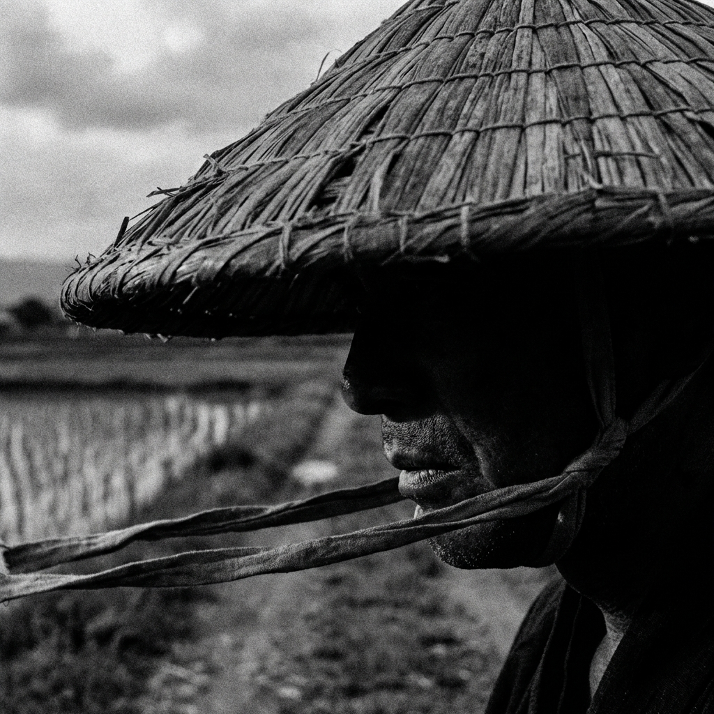
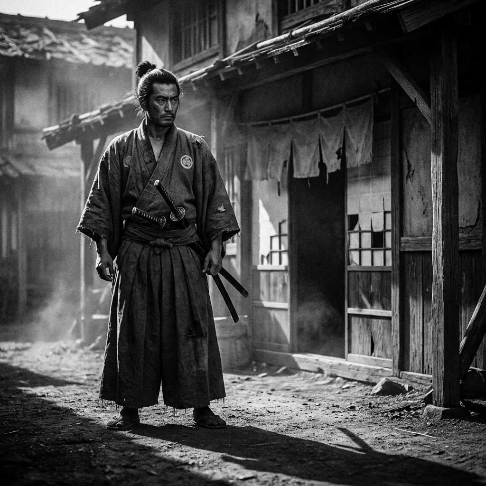
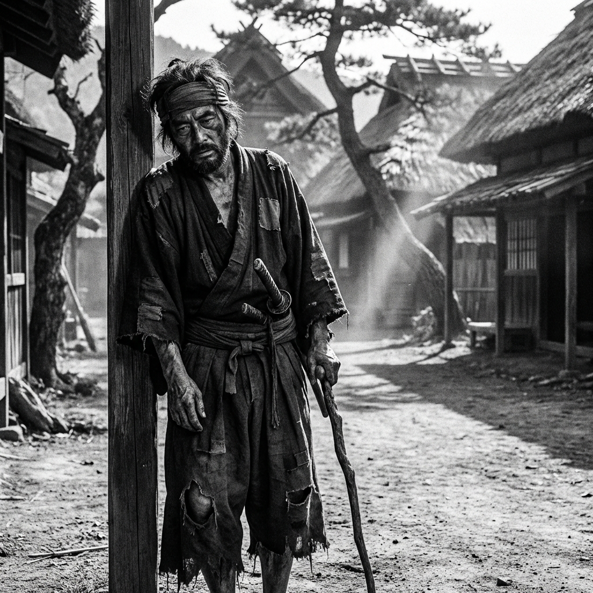
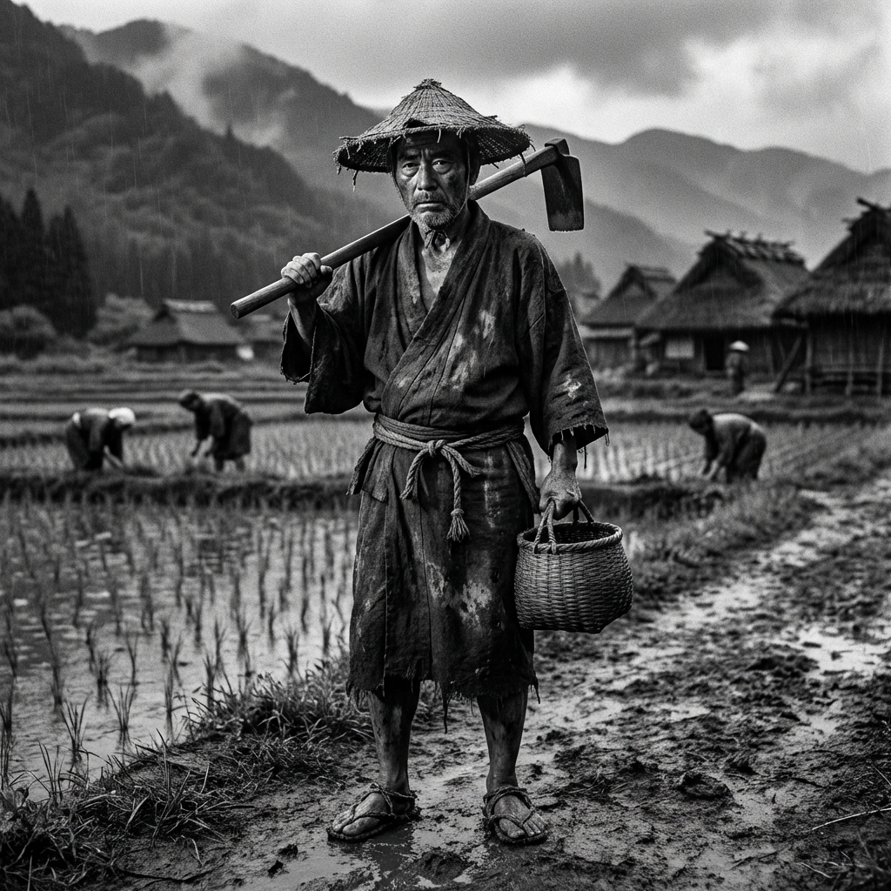
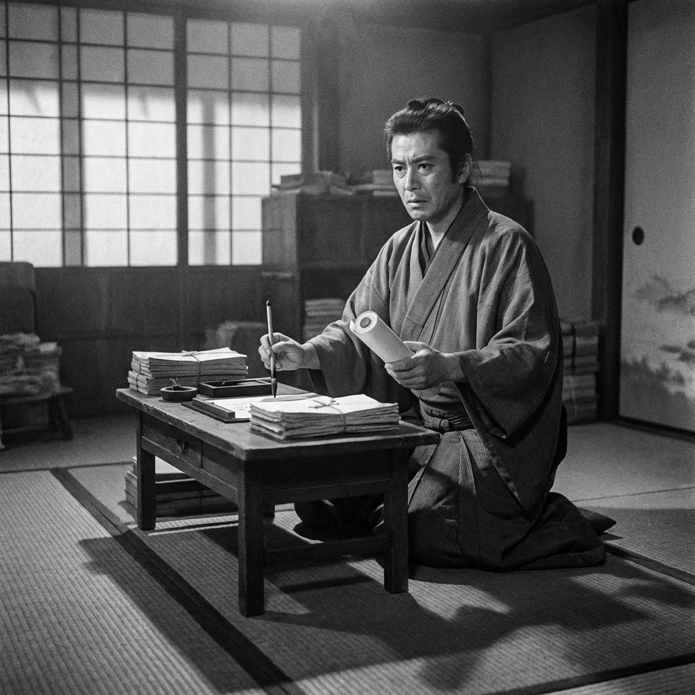
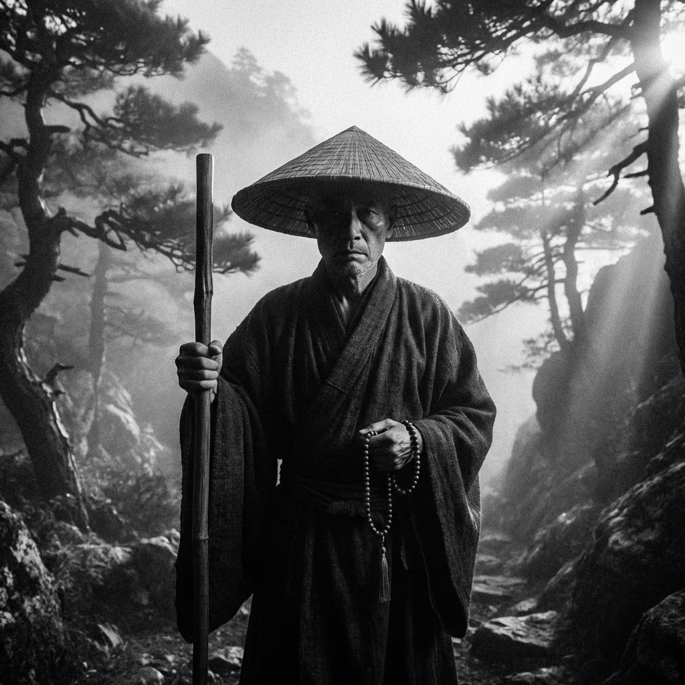
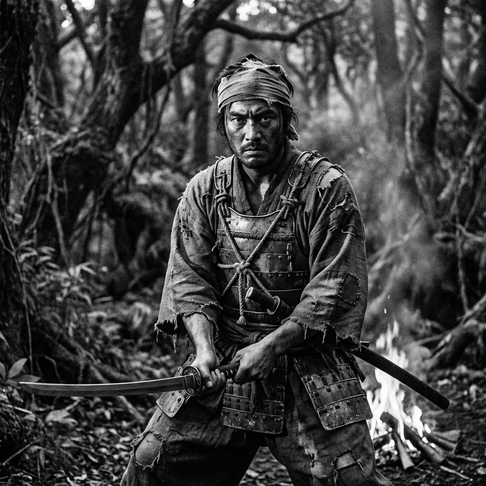
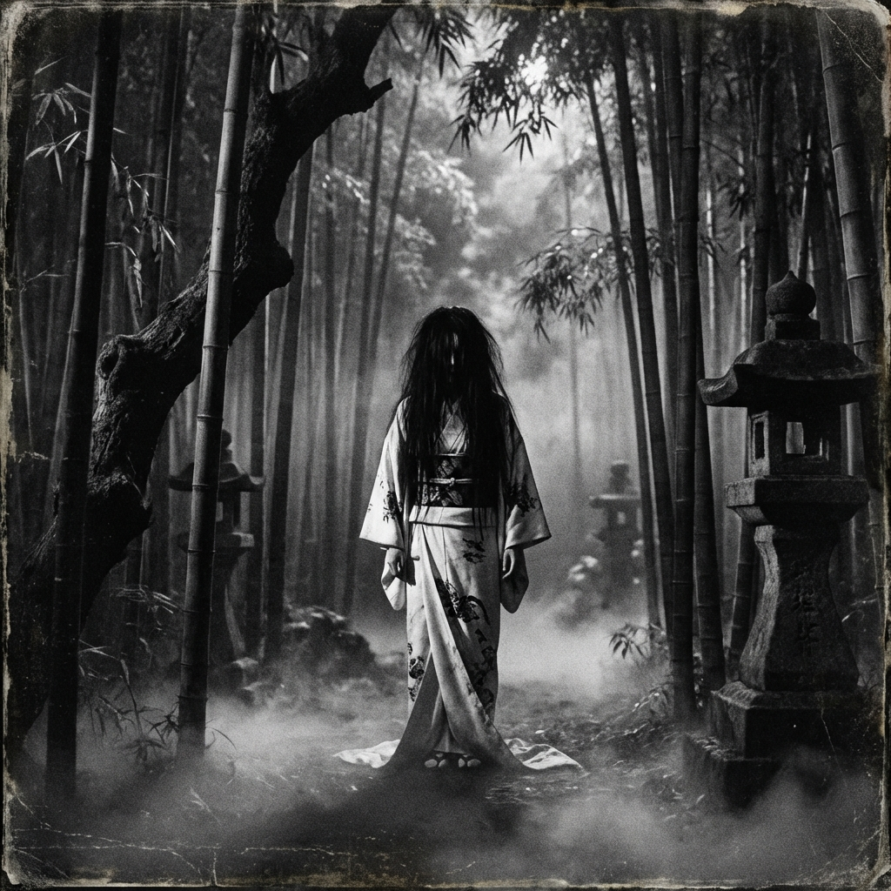

Философия костюма
Имитация и история — в духе фильмов Акиры Куросавы
Мы не требуем полной исторической аутентичности. Наша цель — создать живой, кинематографичный образ в духе фильмов Акиры Куросавы, где функциональность и характер важнее музейной точности.
1. Время и стиль
Мы играем условное историческое время, которое скорее задано фильмом «Ран», чем каким-то конкретным временем. Но ближе всего — эпоха Бакумацу, закат самурайства и предчувствие перемен. Наша деревня небольшая и консервативная, поэтому основа стиля — традиционный крестьянский и рабочий костюм.
- Западничество: допускается (элементы формы, кепи, ботинки), но в меру. Помните, что вы в глуши, а не в портовом Иокогаме.
- Одежда как паспорт: по вашему виду должно быть понятно, кто вы — крестьянин, монах или чиновник.
2. Девиз: имитация, а не реконструкция
Не усложняйте там, где можно упростить.
- Оби (пояс): можно на липучках или крючках.
- Хакама: можно на резинке (чтобы не развязывать по полчаса в уборной).
- Кимоно: можно не традиционный крой, а нечто осовремененное, особенно для крестьян, которых у нас большинство.
3. Цвет и сословия
Мы не вводим строгую «цветовую дифференциацию штанов», но просим соблюдать сословное приличие.
- База: приветствуются природные, приглушённые тона — индиго, серый, коричневый, оливковый.
4. Материалы и фактура
- Ткани: бязь, поплин, габардин, мешковина, войлок — или вообще не париться и использовать любой подвернувшийся материал.
- Вид: костюм должен выглядеть «обжитым» (пятна чая, извалять в пыли, замятый в рюкзаке костюм). Свежие краски и вид «только из магазина» подходят для высшей знати. Заплатки, следы дорожной пыли, пота или чернил сделают ваш образ глубже и интереснее.
5. Обувь
Допустимо всё: от традиционных гэта и варадзи (с носками таби) до обычных кед.
- Условие для кед: тёмные цвета. Очень желательно замотать их сверху тряпьём или эластичными бинтами для создания нужного силуэта.

6. Игровые предметы и «Осколки» (ВАЖНО)
- Осколки души: каждому игроку нужно иметь при себе минимум 3 мелких личных предмета. Это могут быть веера, нэцкэ, памятные безделушки, памятные монеты. И вам должно быть не жалко потерять эти предметы или отдать другому.
- Мандаты: именно на эти предметы будут вешаться игровые мандаты. Эти вещи должны быть частью вашего облика, а не лежать на дне сумки.
Базовый гардероб (шпаргалка)
- Верх: кимоно / косодэ / юката / хаори. Запах всегда налево (направо — только у покойников!). Рукав для всех делаем упрощённый, без жёстких гендерных различий.
- Низ: штаны момохики или упрощённые хакама.
- Верхняя одежда: жилетка (дзимбаори) из грубого материала. Для военных — клановый знак на спине (можно нарисовать краской, не обязательно вышивать).
- Защита: плащи из рогожи или их имитация из грубой шерсти.
Сословия: образы







Маркеры и атрибуты
- 2 меча за поясом — самурай или ронин
- Хакама — самурай или ронин
- 1 меч — скорее чей-то охранник
- Ног не видно (прикрыта полами одежды), кимоно на запах направо — призрак / дух / нежить
- Чётки, шляпа, посох — монах
Если вы достаточно упороты чтобы шиться, вот ссылка на видео:
www.ru-jp.org/hovanchuk-jp-odezhda-01.htm